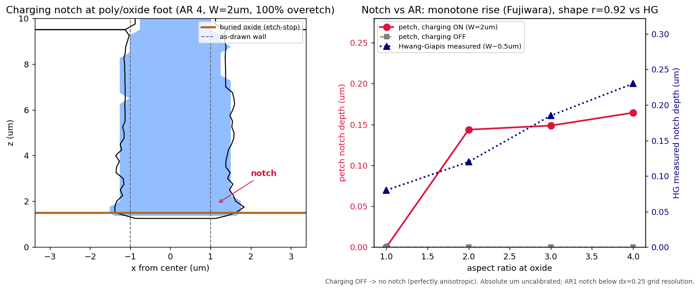

Overview › Experimental Validation
Experimental Validation
Benchmarking the simulator against measured wafers — not just against another simulator.
Everywhere else in these docs we compare our solver to ViennaPS, the open-source state-of-the-art feature-scale etcher. That comparison tells us whether our numerics are right. It does not tell us whether our physics is right, because ViennaPS itself is a model. This page is about the harder and more honest question: how do we know the simulator reproduces what actually happens on a wafer?
ViennaPS validates its SF6/O2 model against one experimental dataset — the Belen 2005 hole-etch SEMs — and it does so by fitting the incident fluxes separately for each process condition. Pressure is not modeled; charging is not modeled. The fluxes are calibration knobs tuned to make each SEM match. So "matching ViennaPS" really means "matching a model that was hand-calibrated to a handful of cross-sections." It is not a first-principles prediction of reality. To claim we are accurate against the real world, we have to benchmark directly to measured wafer data: etch rates, yields, sidewall angles, and aspect-ratio-dependent depths that someone put under an SEM and a profilometer. The rest of this page is the ranked set of those experimental targets and the exact numbers we hold ourselves to.
1. Benchmark datasets
Three published experiments, ranked by how directly they pin down our model. #1 anchors absolute rate and yield, #2 anchors the aspect-ratio physics, and #3 anchors the ion-reflection morphology. All three are open literature with digitizable figures and full process conditions.
#1 — Gomez, Belen & Aydil 2004: SF6/O2 hole etch (the anchor)
This is the measured wafer data that ViennaPS's SF6/O2 model is built on, which makes it doubly useful: it validates us and simultaneously cross-checks ViennaPS against its own source experiment. Gomez, Belen, Aydil, JVST A 22, 606 (2004), DOI 10.1116/1.1710493.
Reactor & geometry: Lam TCP9400 inductively-coupled plasma, 800 W source, 25 mTorr, 80 sccm, base feed ratio SF6:O2 = 1.0, electrostatic chuck at 5 °C, substrate bias swept 0 to −120 V. Etched features are 0.35–0.5 µm holes through a 1.2 µm SiO2 mask, reaching aspect ratios up to 20.
| Measured quantity | Experimental result | What it pins |
|---|---|---|
| Etch rate vs. pressure | ~0.8 µm/min @ 10 mTorr → ~1.3 µm/min peak @ 25 mTorr → ~0 @ 75 mTorr | chemistry / flux balance |
| Etch rate vs. bias | ~0.3 µm/min @ 0 V → 1.3 @ −40 V → saturates ~1.7 µm/min beyond −120 V | ion-energy dependence of yield |
| Etch yield (Si atoms / ion) | 7–8 @ \(\Gamma_F/\Gamma_i \approx 600\) → 9–14 @ \(\Gamma_F/\Gamma_i \approx 1000\text{–}2400\) | the cleanest absolute target |
| Sidewall angle vs. SF6:O2 | ratio ≥ 1.29 bowed/undercut · = 1.0 vertical · ≤ 0.78 tapered (Fig. 9 = canonical profile set) | profile-shape response to chemistry |
| Selectivity Si:SiO2 | peaks > 50 @ 25 mTorr; ~9 at the vertical-profile recipe | passivation / mask erosion |
The yield row is the load-bearing one. A yield of 7–14 Si atoms removed per incident ion, rising with the neutral-to-ion flux ratio, is exactly the ion–neutral synergy the chemistry model is built to reproduce: \(V_n \sim Y_{ie}\,\Gamma_{\rm ion}\,\theta_F\) with \(\theta_F \sim \Gamma_F/\Gamma_{\rm ion}\). Anchoring our ion-enhanced channel so that it delivers 7–14 atoms/ion in this flux-ratio range is what turns an arbitrary unit constant into a physically grounded one.
For reference, Belen's per-condition calibrated fluxes (the ones ViennaPS inherits) are \(\Gamma_F \approx 3\text{–}5.5\times10^{18}\), \(\Gamma_O \approx 0.2\text{–}1.5\times10^{18}\), and a constant \(\Gamma_i \approx 1\times10^{16}\) cm−2s−1, with sticking \(\gamma_F=0.7\), \(\gamma_O=1.0\). These are fits, not predictions — which is precisely why matching the measured yield, not the fitted flux, is the meaningful test.
#2 — de Boer 2002: cryogenic RIE-lag (the aspect-ratio anchor)
The cleanest digitizable aspect-ratio-dependent etching (ARDE / RIE-lag) curve in the literature with fully reported conditions. The Belen hole data alone cannot test this, because it does not sweep opening width at fixed chemistry; de Boer does. de Boer et al., JMEMS 11, 385 (2002), DOI 10.1109/JMEMS.2002.800928, Fig. 9.
Reactor & geometry: Oxford PlasmaLab 100, 600 W ICP, 10 mTorr, 90 sccm SF6, DC self-bias −30 V, cryogenic substrate, SiO2 mask, openings from 1 to 128 µm.
| Quantity | Measured (25 min etch) |
|---|---|
| Depth vs. opening | ~52 µm at a 3 µm opening → ~77 µm plateau for openings > 40 µm |
| Narrow-feature lag | narrowest features etch ~32% shallower than the open field |
The mechanistic backbone for this curve is the Blauw Knudsen/Clausing transport model (Blauw et al., JVST B 18, 3453, 2000), in which the bottom-to-top etch-rate ratio is set by aperture conductance:
$$R_E \;\approx\; \frac{K^{\rm AR}}{K^{\rm AR} + S_F - K^{\rm AR}\,S_F},$$where \(K^{\rm AR}\) is the aspect-ratio-dependent Clausing transmission probability and \(S_F\) is the fluorine reaction (sticking) probability at the floor, measured here as \(S_F \approx 0.47\) cryogenic / \(0.32\) for the ICP condition. The corresponding normalized etch rate falls steeply with aspect ratio:
| Aspect ratio (AR) | 0 | 10 | 20 | 40 |
|---|---|---|---|---|
| Normalized etch rate | 1.00 | 0.43 | 0.29 | 0.20 |
The form above contains the entire reaction- vs. transport-limited story. At low ion flux the floor is reaction-limited and the etch is nearly AR-independent (flat ARDE). At high ion flux the floor consumes fluorine faster than conductance can deliver it, so the etch becomes F-transport-limited and ARDE turns steep. Note the limit \(S_F\to0 \Rightarrow R_E\to 1/K^{\rm AR}\): lower floor sticking gives a flatter ARDE. This is the quantitative version of the "neutral-limited vs. F-saturated" diagnosis that runs through our whole calibration story — and a dataset like this, which sweeps opening width at known \(S_F\), is the only way to test that we land in the right regime rather than just matching one depth.

cal_F flux normalization — retired.)Feature charging — gated against Hwang–Giapis (closure passes; conductor build gets the mechanism)
Differential charging is the third structural physics channel (after conductance and the reflected-ion floor): electrons arrive quasi-isotropically while ions are collimated, so a high-AR insulating floor charges positive until ion and electron currents balance — decelerating and deflecting ions. petch now carries a 2-D charging solver built directly on the published method (Hwang & Giapis, JVST B 15, 70 (1997); JAP 82, 566 (1997)): ballistic ion/electron tracing through the in-feature field, per-segment current balance, Laplace in the vacuum.

Notching — the charging solver wired into an overetch, gated vs measured Hwang–Giapis / Fujiwara
The charging closure above is not just a static gate — it is wired into the evolving etch (surface_charging="hg") and run through a real notch experiment. New multi-material support (run_etch_3d(etch_stop_z=)) puts a poly-Si film on a buried oxide etch-stop; the vertical front halts at the oxide (infinite selectivity), and during overetch the charging-deflected ion flux — the survivor slice removed from the floor and redirected to the sidewall foot at the published deflected energy Edefl(AR) — digs a notch at the poly/oxide junction. This is the mechanism no open feature-scale etcher (ViennaPS included) models.

scripts/notching_depth_gate.py). The notch is entirely charging-driven: with charging off the wall is perfectly anisotropic (0.000 µm undercut at every AR); with charging on it undercuts 0.144 / 0.149 / 0.164 µm at AR 2 / 3 / 4 — a controlled A/B. Gates: charging-specific mechanism PASS; Fujiwara (JJAP 34, 2095) monotone rise with AR PASS; Hwang–Giapis (JAP 82, 566) notch-vs-AR shape r = 0.92 PASS over the resolved range. Honestly stated on the figure: absolute depth is uncalibrated (normalized notch/W ≈ 0.07–0.08 vs HG's 0.24–0.46 at their W ≈ 0.5 µm — ~3–5× shallow; overetch time and deflected-flux magnitude are not fit to HG), AR 1 sits below the dx = 0.25 µm grid floor, and sub-micron (HG-scale) grids destabilize the sidewalls even without charging — the finer-resolution frontier. Two engine facts made it work, both documented: the flat-floor overetch regime runs sidewalls away laterally unless redeposition passivates them (a latent kernel bug there was fixed), and the deflected-ion foot band must be a fixed physical height (~0.3·W, the corner-field/Debye scale) not a depth fraction.#3 — Hoekstra & Kushner 1998: microtrenching (the ion-reflection anchor)
The cleanest open experiment-plus-SEM for ion-reflection microtrenching. It is in Cl2 rather than SF6/O2, so for us it is a mechanism check on the specular-reflection model rather than a chemistry match. Hoekstra & Kushner, JVST B 16, 2102 (1998), DOI 10.1116/1.590135, Fig. 2.
Reactor: Lam 9400 ICP, 600 W source / 100 W bias, 10 mTorr Cl2.
| Mechanism requirement | Measured / required value |
|---|---|
| Specular reflection at grazing incidence | must exceed ~90% at > 80° from normal to reproduce the microtrenches |
| Energy retention at grazing | ions retain up to ~99% of energy |
This is the experimental authority behind the grazing-angle ion-reflection mechanism that carves microtrenches at the bottom corners of a feature. (It, not Hwang–Giapis, is the correct primary reference for specular microtrenching.) The related charging/notching phenomenon is documented separately by Hwang & Giapis 1997 (JVST B 15, 70, Fig. 17): a notch depth growing from ~50 nm at a 1.2 µm feature to a ~250–270 nm plateau — the charging physics petch now includes, reproducing this notch's monotone-with-AR shape (r = 0.92) as a controlled charging-on/off result (above); absolute depth is not yet calibrated.
2. Fundamental chemistry constants
Beneath the feature-scale fits sit two pieces of measured surface chemistry that anchor the spontaneous (ion-free) and flux-dependent behavior of fluorine on silicon. These are first-principles experimental laws, not calibration knobs.
Spontaneous F + Si etch rate (Flamm 1981)
The thermal, ion-free etch rate of silicon by atomic fluorine follows a measured Arrhenius law with a square-root temperature prefactor: Flamm et al., JAP 52, 3633 (1981).
$$R \;=\; \big(2.91\times10^{-12}\big)\,T^{1/2}\,n_F\,\exp\!\Big(\frac{-0.108\ \text{eV}}{k_BT}\Big)\quad[\text{Å/min}],$$with activation energy \(E_a = 0.108\) eV and \(n_F\) the atomic-fluorine number density. This fixes the absolute magnitude of the purely chemical etch term — the part that proceeds with no ion assistance at all — so that our ion-enhanced channel (7–14 atoms/ion, target #1) is added on top of a chemistry term that is itself anchored to measured data rather than tuned. The selectivity counterpart is the much slower F + SiO2 rate, \(\epsilon_F = 1.63\times10^{-2}\exp(-0.163\ \text{eV}/k_BT)\).
Flux-dependent reaction probability (Donnelly 2017)
The fluorine reaction probability on silicon is not a single constant — it falls with incident flux by roughly 30×: Donnelly, JVST A, 2017.
| Incident F flux (cm−2s−1) | Reaction probability |
|---|---|
| ~1012 | 0.03 |
| ~1020 | 0.001 |
ViennaPS's \(\gamma_F = 0.7\) is an effective sticking coefficient in its particle model — it is not this measured reaction probability, and it does not vary with flux. Real fluorine sticking varies with both flux (Donnelly, above: 0.001–0.03) and surface state (MD studies show 0.98 on bare Si dropping to 0.23 as the surface fluorinates). Treating \(\gamma_F\) as a fitted, flux-normalized constant is the field-standard approximation (Belen uses 0.7, Marcos 0.1), so our flux-normalization knob is not a hack — but the experiments above are a reminder that the true quantity is flux- and coverage-dependent, and a model that captured that dependence would be strictly more physical than either us or ViennaPS today.
3. What we can — and cannot — claim
What matching #1 + #2 lets us claim, validated against real wafer SEMs and profilometry:
- Profile-shape response to chemistry — SF6:O2 ratio driving tapered → vertical → bowed sidewalls (target #1, Fig. 9).
- Correct ARDE / RIE-lag trend — Knudsen F-transport with the reaction-limited vs. transport-limited crossover (target #2).
- Ion-reflection microtrenching morphology — the bottom-corner carving from specular grazing reflection (target #3).
- Reasonable absolute etch rate and yield — chemical term anchored to Flamm 1981, ion-enhanced term to the measured 7–14 atoms/ion.
That is as good as, or better than, what ViennaPS itself demonstrates — and crucially it is measured against experiment, not against another simulator.
What still deviates from real wafers — and is also missing from ViennaPS:
- Charging — notching and aspect-ratio-dependent ion deflection. No longer absent from petch: the floor-flux closure passes the HG gate (0.039) and the wired notch reproduces the measured notch's charging-on/off signature and monotone-with-AR shape (r = 0.92, above). Still absent from ViennaPS entirely. Open in petch: absolute notch depth calibration and the deep-AR electron supply (RF-phase trajectories).
- The real bimodal IEDF tail — we now have an ion energy distribution; ViennaPS carries only a mean-plus-Gaussian. Neither captures the full bimodal RF tail.
- Redeposition / SiOxFy passivation transport — volatile product re-landing that narrows the top and raises effective aspect ratio.
- Flux-dependent reaction probability — the Donnelly curve above; both models use an effective constant sticking instead.
- Absolute fluxes are fit, not predicted — this is a feature-scale profile simulator, not a plasma-to-wafer model. The incident fluxes come from calibration, not from solving the reactor.
Bottom line: matching targets #1 and #2 means we are validated against real wafer SEMs and ARDE data for shape, rate, yield, and aspect-ratio behavior — as good as or better than ViennaPS demonstrates, and against experiment rather than against a calibrated model. To go further and beat real production wafers, the additions are clear and ranked: charging first, then the real IEDF.